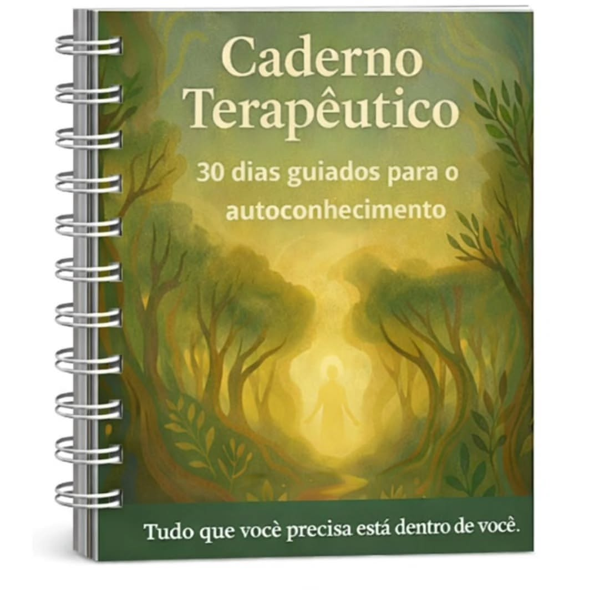

30 dias guiados
Propostas profundas e acessíveis, pensadas para quem carrega dores em silêncio e quer um caminho claro, sem pressa.

30 dias guiados
Um caminho de autoconhecimento, acolhimento e transformação — no seu tempo, no seu ritmo. Você recebe o material para começar agora, onde estiver.
Palavra de Ieda
Meu compromisso é com o ser humano: ajudá-lo a perceber sua capacidade e o potencial que existe por trás dos medos e das ansiedades.
Este caderno terapêutico nasceu do meu olhar sensível para as dores silenciosas que muitas pessoas carregam, muitas vezes sem acesso ao suporte terapêutico.
Reuni aqui 30 exercícios profundos e acessíveis, com o propósito de guiar você em um caminho de autoconhecimento, acolhimento e transformação — no seu tempo, no seu ritmo.

O que você encontra
Propostas profundas e acessíveis, pensadas para quem carrega dores em silêncio e quer um caminho claro, sem pressa.
Um convite a perceber a própria capacidade — e o potencial que existe por trás dos medos e das ansiedades.
Não há cobrança de ritmo. Você percorre cada exercício quando fizer sentido, no aparelho que estiver à mão.
O caderno chega até você em formato digital, pronto para baixar, imprimir se desejar ou preencher na tela.
Clareza
Como começa
“Escrever virou o único horário do dia em que eu não preciso performar. O caderno me devolveu silêncio.”
Letícia M. · designer
Dúvidas
No seu ritmo
Uma mensagem é o suficiente para receber o material e começar os 30 dias guiados.